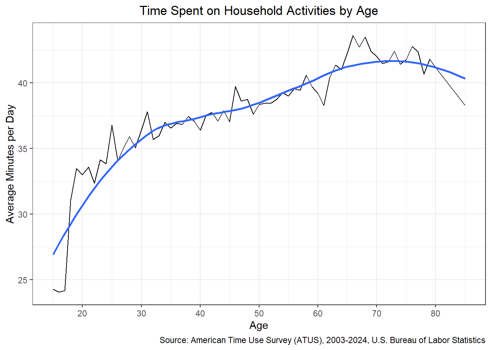
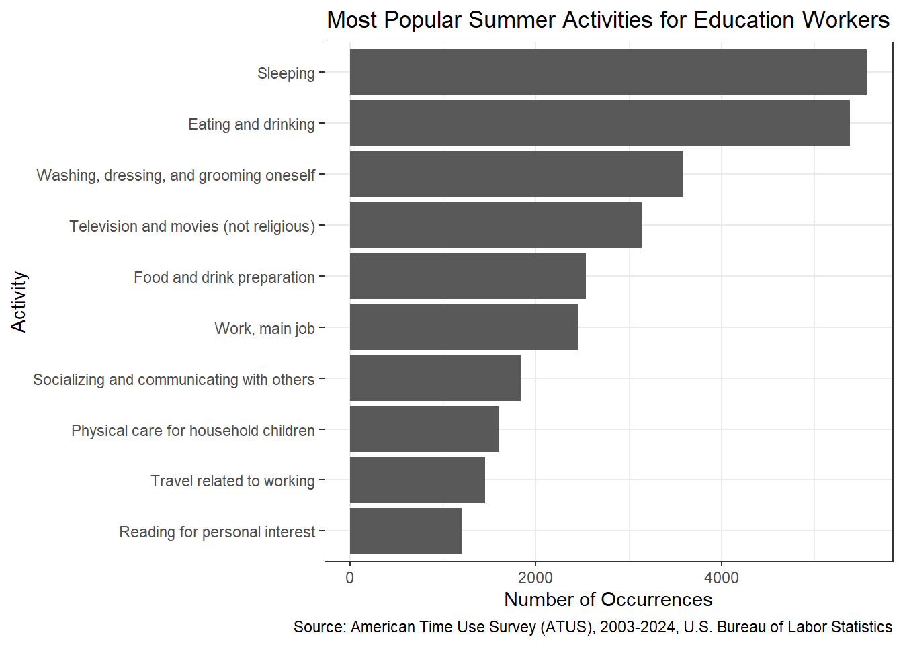
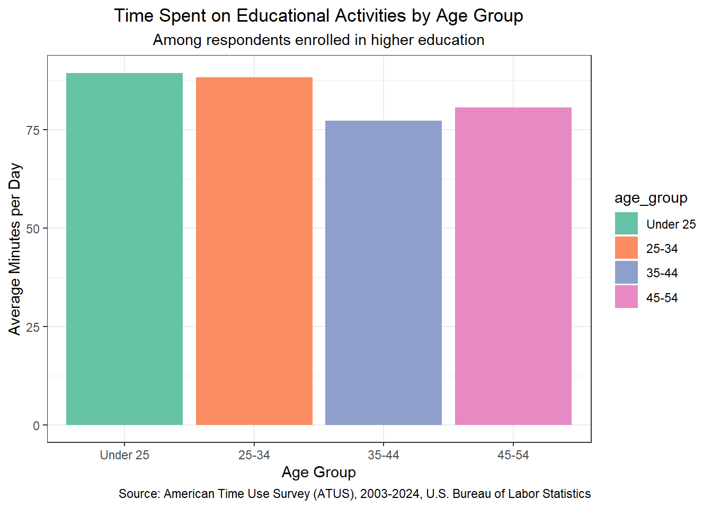
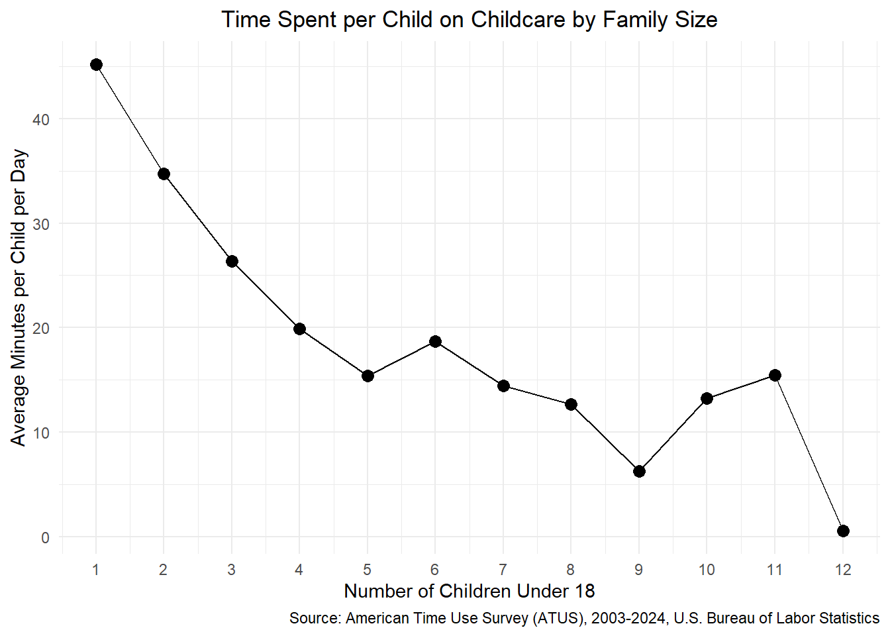

A suitable introduction goes here. In this mini-project, I intend to demonstrate my skills at Combining Data/Data Visualization in an analysis of Survey Date/Social Sciences data.
Data Acquisition and Preparation
Data Acquisition from ATUS
Display Code
# Your code goes in chunks like thislibrary(tidyverse)library(glue)library(readxl)library(httr2)library(skimr)library(dplyr)library(scales)library(gt)load_atus_data <-function(file_base =c("resp", "rost", "act", "cps")){if(!dir.exists(file.path("data", "mp02"))){dir.create(file.path("data", "mp02"), showWarnings=FALSE, recursive=TRUE) } file_base <-match.arg(file_base) file_name_out <-file.path("data", "mp02", glue("atus{file_base}_0324.dat"))if(!file.exists(file_name_out)){ url_end <-glue("atus{file_base}-0324.zip") temp_zip <-tempfile(fileext=".zip") temp_dir <- tools::file_path_sans_ext(temp_zip)request("https://www.bls.gov") |>req_url_path("tus", "datafiles", url_end) |>req_headers(`User-Agent`="Mozilla/5.0 (Macintosh; Intel Mac OS X 10.15; rv:149.0) Gecko/20100101 Firefox/149.0") |>req_perform(temp_zip)unzip(temp_zip, exdir = temp_dir) temp_file <-file.path(temp_dir, basename(file_name_out))file.copy(temp_file, file_name_out) } file <-read_csv(file_name_out, show_col_types =FALSE)switch(file_base, #add cps data to determine if respondent is marriedcps=file |>filter(TULINENO ==1) |>mutate(marital_status =case_match(PEMARITL,1~"Married - spouse present",2~"Married - spouse absent",3~"Widowed",4~"Divorced",5~"Separated",6~"Never married"),#check if respondents are marriedhas_spouse = marital_status %in%c("Married - spouse present", "Married - spouse absent"),is_retired = PEMLR ==5,#check if respondent works in education by main job occupation codein_education = PRDTOCC1 ==8) ,resp=file |>rename(survey_weight = TUFNWGTP, time_alone = TRTALONE, survey_year = TUYEAR,survey_month = TUMONTH,weekly_earnings = TRERNWA) |>#add a column that counts number of children from roster fileleft_join(load_atus_data("rost") |>filter(relation =="Self") |>select(participant_id, age), join_by(TUCASEID == participant_id) ) |>left_join(load_atus_data("rost") |>filter(age <18) |>count(participant_id, name ="n_children_under18"),join_by(TUCASEID == participant_id) ) |># pull in CPS data to add marital_status and has_spouse columnsleft_join(load_atus_data("cps"),join_by(TUCASEID == participant_id) ) |>#coalesce will turn NA values into 0mutate(n_children_under18 =coalesce(n_children_under18, 0L),labor_force_status =case_match(TELFS,1~"Employed - at work",2~"Employed - absent",3~"Unemployed - on layoff",4~"Unemployed - looking",5~"Not in labor force"),#creates column indicating enrollmentschool_enrollment =case_match(TESCHENR,1~"Enrolled",2~"Not Enrolled",-1~"Blank"),#create demographic variable that checks if enrolled and teschlvl matches college/universitycollege_enrolled = TESCHENR ==1& TESCHLVL ==2) ,rost=file |>mutate(sex =case_match(TESEX, 1~"M", 2~"F"),#adding relation to respondentrelation =case_match(TERRP,c(18,19) ~"Self",20~"Spouse",21~"Unmarried partner",22~"Own household child",23~"Grandchild",24~"Parent",25~"Brother/sister",26~"Other related person",27~"Foster child",28~"Housemate/roommate",29~"Roomer/boarder",30~"Other nonrelative",40~"Own nonhousehold child < 18")) |>rename(age = TEAGE), act =file |>mutate(activity_n_of_day = TUACTIVITY_N, time_spent_min = TUACTDUR24, start_time = TUSTARTTIM,stop_time = TUSTOPTIME, level1_code =paste0(TRTIER1P, "0000"), level2_code =paste0(TRTIER2P, "00"),level3_code = TRCODEP,#location of activitylocation =case_match(TEWHERE,1~"Home",2~"Workplace",3~"Someone else's home",4~"Restaurant bar",5~"Place of worship",6~"Grocery store",7~"Other store/mall",8~"School",9~"Outdoors",10~"Library",11~"Other place",12~"Car, truck, or motorcycle (driver)",13~"Car, truck, or motorcycle (passenger)",14~"Walking",15~"Bus",16~"Subway/train",17~"Bicycle",18~"Boat/ferry",19~"Taxi/limousine service",20~"Airplane",21~"Other transportation",30~"Bank",31~"Gym/health club",32~"Post office",89~"Unspecificed place",99~"Unspecified transportation", (-1) ~"Blank" )) ) |>rename(participant_id = TUCASEID) |>select(matches("[:lower:]", ignore.case=FALSE))}load_atus_activities <-function(){if(!dir.exists(file.path("data", "mp02"))){dir.create(file.path("data", "mp02"), showWarnings=FALSE, recursive=TRUE) } dest_file <-file.path("data","mp02","atus_activity_codes.csv")if(!file.exists(dest_file)){download.file("https://michael-weylandt.com/STA9750/mini/atus_activity_codes.csv", quiet=TRUE, destfile=dest_file, mode="wb") }read_csv(dest_file, show_col_types =FALSE) }respondents <-load_atus_data("resp")cps <-load_atus_data("cps") roster <-load_atus_data("rost")activities <-load_atus_data("act")activity_codes <-load_atus_activities()glimpse(respondents)
Code related to Exploratory Data Analysis goes here. This may include exploratory graphics, instructor-provided exploratory questions, or other similar elements.
Inline Values
1. How many different respondents have answered an ATUS survey since 2003?
4. On average, how many hours do Americans sleep per night?
Display Code
avg_sleep_hours <- activities |>#filtering only on level 3 code 10101 since we don't know if Other Sleep includes actually sleepingfilter(level3_code =="010101") |>group_by(participant_id) |>summarise(total_sleep_min =sum(time_spent_min)) |>left_join( respondents |>select(participant_id, survey_weight),join_by(participant_id) ) |>summarise(avg_sleep_hours =weighted.mean(total_sleep_min, survey_weight) /60) |>pull(avg_sleep_hours)
On average, Americans sleep 8.7 hours per night.
5. On average, how many hours do Americans with one or more children in the home spend taking care of their children (all activities including healthcare and involvement in their children’s education)?
Display Code
avg_childcare_hours <- activities |>filter( level1_code =="030000", level2_code %in%c("030100", "030200", "030300")) |>group_by(participant_id) |>summarise(total_childcare_min =sum(time_spent_min)) |>#right join ensures we keep all respondents with children even if they recorded zero childcare activities#this will prevent an upward bias in the averageright_join( respondents |>filter(n_children_under18 >=1) |>select(participant_id, survey_weight),join_by(participant_id) ) |>mutate(total_childcare_min =coalesce(total_childcare_min, 0L)) |>summarise(avg_childcare_hours =weighted.mean(total_childcare_min, survey_weight) /60) |>pull(avg_childcare_hours)
On average, American with one or more children spend 1 hours taking care of their children.
Tables
1. Do retired persons spend more time on lawn-care than people who have full-time employment?
Display Code
lawn_care <- activities |>filter( level2_code =="020500",#filter only one level 3 activity code that specifically talks about lawns since we don't know what is included in Other category level3_code =="020501" ) |>group_by(participant_id) |>summarise(total_lawn_min =sum(time_spent_min)) |>right_join( respondents |>filter(is_retired | labor_force_status =="Employed - at work") |>select(participant_id, survey_weight, is_retired, labor_force_status), join_by(participant_id) ) |>mutate(total_lawn_min =coalesce(total_lawn_min, 0L)) |>group_by(is_retired) |>summarise(avg_lawn_hours =weighted.mean(total_lawn_min, survey_weight) /60)#tablelawn_care_table <- lawn_care |>mutate(is_retired =if_else(is_retired, "Retired", "Employed Full-Time")) |>gt() |>cols_label(is_retired =md("**Employment Status**"),avg_lawn_hours =md("**Average Hours Spent<br>on Lawn Care**") ) |>cols_align(align ="center", columns = avg_lawn_hours) |>fmt_number(avg_lawn_hours, decimals =2) |>tab_header(title =md("**Lawn Care Hours by Employment Status**"), subtitle ="Average Time Spent on Lawn-Care for Retired vs. Full-Time Employed Persons" ) |>tab_source_note(source_note =md("*Source: [American Time Use Survey (ATUS)](https://www.bls.gov/tus/data/datafiles-0324.htm), 2003-2024, U.S. Bureau of Labor Statistics*") )lawn_care_table
Lawn Care Hours by Employment Status
Average Time Spent on Lawn-Care for Retired vs. Full-Time Employed Persons
Most common, in this case, means most frequently reported activity as opposed to activity with most reported time spent on activity
5. How much time per day do Americans spend on your four favorite activities and how does this vary by age group?
Evelyn’s Favorite Activities:
Reading (ATUS Level 3 Task Name: Reading for personal interest)
Playing Video and Board Games (ATUS Level 3 Task Name: Playing games)
Lifting at the Gym (ATUS Level 3 Task Name: Weightlifting or strength training)
Scuba Diving (ATUS Level 3 Task Name: Participating in water sports)
Note: Analysis includes those who reported 0 time spent on these activities so we can see prevalance in the general population
Display Code
c("Reading for personal interest", "Playing games", "Weightlifting or strength training", "Participating in water sports") |>map(\(activity_name) { code <- activity_codes |>filter(task_level3 == activity_name) |>pull(code_level3) activities |>filter(level3_code == code) |>right_join( respondents |>select(participant_id, survey_weight),join_by(participant_id) ) |>mutate(time_spent_min =coalesce(time_spent_min, 0L)) |>left_join( roster |>filter(relation =="Self") |>select(participant_id, age),join_by(participant_id) ) |>mutate(age_group =cut(age, breaks =c(0, 24, 34, 44, 54, 64, Inf),labels =c("Under 25", "25-34", "35-44","45-54", "55-64", "65 and over")),activity = activity_name) |>group_by(activity, age_group) |>summarise(avg_min =weighted.mean(time_spent_min, survey_weight),.groups ="drop") }) |>list_rbind() |>pivot_wider(names_from = activity, values_from = avg_min) |>gt() |>cols_label(age_group =md("**Age Group**"), `Reading for personal interest`=md("**Reading**"),`Playing games`=md("**Playing Games**"),`Weightlifting or strength training`=md("**Weightlifting or<br>Strength Training**"), `Participating in water sports`=md("**Participating in<br>Water Sports**") ) |>fmt_number(c("Reading for personal interest", "Playing games", "Weightlifting or strength training", "Participating in water sports"), decimals =0) |>cols_align(align ="center", columns =c("Reading for personal interest", "Playing games", "Weightlifting or strength training", "Participating in water sports")) |>tab_header(title =md("**Time Spent on Evelyn's Favorite Activities by Age Group**"), subtitle ="Average Minutes per Day for Each Activity" ) |>tab_source_note(source_note =md("*Source: [American Time Use Survey (ATUS)](https://www.bls.gov/tus/data/datafiles-0324.htm), 2003-2024, U.S. Bureau of Labor Statistics*") )
Time Spent on Evelyn’s Favorite Activities by Age Group
c("Reading for personal interest", "Playing games", "Weightlifting or strength training", "Participating in water sports") |>map(\(activity_name) { code <- activity_codes |>filter(task_level3 == activity_name) |>pull(code_level3) activities |>filter(level3_code == code) |>inner_join( respondents |>select(participant_id, survey_weight),join_by(participant_id) ) |>left_join( roster |>filter(relation =="Self") |>select(participant_id, age),join_by(participant_id) ) |>mutate(age_group =cut(age, breaks =c(0, 24, 34, 44, 54, 64, Inf),labels =c("Under 25", "25-34", "35-44","45-54", "55-64", "65 and over")),activity = activity_name) |>group_by(activity, age_group) |>summarise(avg_min =weighted.mean(time_spent_min, survey_weight),.groups ="drop") }) |>list_rbind() |>pivot_wider(names_from = activity, values_from = avg_min) |>gt() |>cols_label(age_group =md("**Age Group**"),`Reading for personal interest`=md("**Reading for Personal Interest**"),`Playing games`=md("**Playing Games**"),`Weightlifting or strength training`=md("**Weightlifting or Strength Training**"),`Participating in water sports`=md("**Participating in Water Sports**") ) |>fmt_number(c("Reading for personal interest", "Playing games", "Weightlifting or strength training", "Participating in water sports"),decimals =0) |>cols_align(align ="center",columns =c("Reading for personal interest", "Playing games","Weightlifting or strength training", "Participating in water sports")) |>tab_header(title =md("**Time Spent on Selected Activities by Age Group (Among Participants Only)**"), subtitle ="Of those who participated in activity" ) |>tab_source_note(source_note =md("*Source: [American Time Use Survey (ATUS)](https://www.bls.gov/tus/data/datafiles-0324.htm), 2003-2024, U.S. Bureau of Labor Statistics*") )
Time Spent on Selected Activities by Age Group (Among Participants Only)
# time_by_age_group_table <- function(activity_name){# act_code <- activity_codes |># filter(task_level3 == activity_name) |># pull(code_level3)# # activities |> # filter(level3_code == act_code) |># right_join(# respondents |> select(participant_id, survey_weight),# join_by(participant_id)# ) |># mutate(time_spent_min = coalesce(time_spent_min, 0L)) |># left_join(# roster |> # filter(relation == "Self") |># select(participant_id, age),# join_by(participant_id)# ) |># mutate(age_group = cut(age, breaks = c(0, 24, 34, 44, 54, 64, Inf),# labels = c("Under 25", "25-34", "35-44", "45-54", "55-64", "65 and Over"))) |># group_by(age_group) |># summarise(avg_min = weighted.mean(time_spent_min, survey_weight)) |># arrange(age_group) |># gt() |># cols_label(# age_group = md("**Age Group**"), # avg_min = md("**Average Minutes per Day**")# ) |># cols_align(align = "center", columns = c(age_group, avg_min)) |># fmt_number(avg_min, decimals = 0) |># tab_header(# title = md(glue("**Time Spent on {activity_name} by Age Group**")),# subtitle = glue("Average Minutes per Day {activity_name}")# ) |># tab_source_note(# source_note = md("*Source: [American Time Use Survey (ATUS)](https://www.bls.gov/tus/data/datafiles-0324.htm), 2003-2024, U.S. Bureau of Labor Statistics*")# )# }# # time_by_age_group_table("Reading for personal interest")# time_by_age_group_table("Playing games")# time_by_age_group_table("Weightlifting or strength training")# time_by_age_group_table("Participating in water sports")
Plots
1. How does the amount of time spent on household activities change as Americans age?
Display Code
household_by_age <- activities |>filter(level1_code =="020000") |>right_join( respondents |>select(participant_id, survey_weight),join_by(participant_id) ) |>mutate(time_spent_min =coalesce(time_spent_min, 0L)) |>left_join( roster |>filter(relation =="Self") |>select(participant_id, age),join_by(participant_id) ) |>group_by(age) |>summarise(avg_min =weighted.mean(time_spent_min, survey_weight, na.rm =TRUE))household_act_by_age_table <- household_by_age |>ggplot(aes(x = age, y = avg_min)) +geom_line() +geom_smooth(method ="loess", formula = y ~ x) +scale_x_continuous(breaks =seq(0, 90, by =10)) +labs(title ="Time Spent on Household Activities by Age",x ="Age",y ="Average Minutes per Day",caption ="Source: American Time Use Survey (ATUS), 2003-2024, U.S. Bureau of Labor Statistics" ) +theme_bw() +theme(plot.title =element_text(hjust =0.5))household_act_by_age_table

Display Code
# household_by_age <- activities |># filter(level1_code == "020000") |># right_join(# respondents |> select(participant_id, survey_weight),# join_by(participant_id)# ) |># mutate(time_spent_min = coalesce(time_spent_min, 0L)) |># left_join(# roster |># filter(relation == "Self") |># select(participant_id, age),# join_by(participant_id)# ) |># mutate(age_group = cut(age, breaks = c(0, 24, 34, 44, 54, 64, Inf),# labels = c("Under 25", "25-34", "35-44",# "45-54", "55-64", "65 and over"))) |># filter(!is.na(age_group)) |># group_by(age_group) |># summarise(avg_min = weighted.mean(time_spent_min, survey_weight, na.rm = TRUE))# # household_by_age |># ggplot(aes(x = age_group, y = avg_min)) +# geom_col() +# labs(# title = "Time Spent on Household Activities by Age Group",# x = "Age Group",# y = "Average Minutes per Day",# caption = "Source: American Time Use Survey (ATUS), 2003-2024, U.S. Bureau of Labor Statistics"# ) +# theme_minimal() +# theme(plot.title = element_text(hjust = 0.5))
2. A major perk of working in education is the freedom to spend summers how you wish. What are the most popular activities for Americans employed in education during the summer months (June, July, and August)?
Note: Most popular measured by most frequently reported activity.
Display Code
education_summer_activities <- activities |>inner_join( respondents |>filter(in_education, labor_force_status %in%c("Employed - at work", "Employed - absent"), survey_month %in%c(6, 7, 8)) |>select(participant_id, survey_weight),join_by(participant_id) ) |>inner_join( activity_codes,join_by(level3_code == code_level3) ) |>group_by(task_level3) |>summarise(n_occurrences =n()) |>arrange(desc(n_occurrences)) |>slice_head(n =10)education_summer_activities_table <- education_summer_activities |>ggplot(aes(x =reorder(task_level3, n_occurrences), y = n_occurrences)) +geom_col() +coord_flip() +labs(title ="Most Popular Summer Activities for Education Workers",x ="Activity",y ="Number of Occurrences",caption ="Source: American Time Use Survey (ATUS), 2003-2024, U.S. Bureau of Labor Statistics" ) +theme_bw() +theme(plot.title =element_text(hjust =0.5))education_summer_activities_table

3. It is often remarked that “education is a privilege wasted on the young”. Among respondents who report being enrolled in a higher-education program, how does the amount of time allocated to various educational activities (attending class, doing homework, studying, etc.) vary by age? Does it seem to be true that older students dedicate more time to their education?
Display Code
education_time_by_age <- activities |>filter(level1_code =="060000") |>right_join( respondents |>filter(college_enrolled) |>select(participant_id, survey_weight, age),join_by(participant_id) ) |>mutate(time_spent_min =coalesce(time_spent_min, 0L)) |>mutate(age_group =cut(age, breaks =c(0, 24, 34, 44, 54, 64, Inf),labels =c("Under 25", "25-34", "35-44","45-54", "55-64", "65 and over"))) |>filter(!is.na(age_group)) |>group_by(age_group) |>summarise(avg_min =weighted.mean(time_spent_min, survey_weight)) |>arrange(age_group)# education_time_by_age <- activities |># filter(level1_code == "060000") |># right_join(# respondents |># filter(college_enrolled) |># select(participant_id, survey_weight, age),# join_by(participant_id)# ) |># mutate(time_spent_min = coalesce(time_spent_min, 0L)) |># group_by(age) |># summarise(avg_min = weighted.mean(time_spent_min, survey_weight)) |># arrange(age)education_time_by_age_table <- education_time_by_age |>ggplot(aes(x = age_group, y = avg_min, fill = age_group)) +geom_col() +scale_fill_brewer(palette ="Set2") +labs(title ="Time Spent on Educational Activities by Age Group",subtitle ="Among respondents enrolled in higher education",x ="Age Group",y ="Average Minutes per Day",caption ="Source: American Time Use Survey (ATUS), 2003-2024, U.S. Bureau of Labor Statistics" ) +theme_bw() +theme(plot.title =element_text(hjust =0.5),plot.subtitle =element_text(hjust =0.5))education_time_by_age_table

Among respondents who report being enrolled in a higher education program, students who are younger on average spend more time on educational activities than older students. Students under 25 report the highest average time spent on educational activities, followed by students 25-34. Students between 35-44 report the lowest average time spent on educational activities.
4. A “bump plot” is an effective way to display ranking (ordinal) data and to show how it changes over time. Use a bump plot to show how the relative interest in different sports changes as a function of either age or income (your choice).
Display Code
# sports_by_income <- activities |># #filter by participation in sports# filter(level2_code == "130100") |># inner_join(# respondents |># filter(weekly_earnings > 0) |># select(participant_id, survey_weight, weekly_earnings),# join_by(participant_id)# ) |># inner_join(# activity_codes |> select(code_level3, task_level3) |> distinct(),# join_by(level3_code == code_level3)# ) |># mutate(income_group = cut((weekly_earnings / 100) * 52,# breaks = c(0, 25000, 50000, 75000, 100000, Inf),# labels = c("Under $25k", "$25k-$50k", "$50k-$75k", "$75k-$100k", "Over $100k"))) |># filter(!is.na(income_group)) |># group_by(income_group, task_level3) |># summarise(n_occurrences = n(), .groups = "drop") |># group_by(income_group) |># mutate(rank = rank(-n_occurrences)) |># filter(rank <= 10)# # sports_by_income_table <- sports_by_income |># ggplot(aes(x = income_group, y = rank, color = task_level3, group = task_level3)) +# geom_bump() +# geom_point(size = 3) +# scale_y_reverse() +# labs(# title = "Relative Interest in Sports by Income Group",# x = "Income Group",# y = "Rank",# color = "Sport",# caption = "Source: American Time Use Survey (ATUS), 2003-2024, U.S. Bureau of Labor Statistics"# ) +# theme_minimal() +# theme(plot.title = element_text(hjust = 0.5))# # sports_by_income_table
5. How does the amount of time parents spend per child change as family size increases?
Display Code
childcare_by_family_size <- activities |>filter(level1_code =="030000") |>right_join( respondents |>filter(n_children_under18 >0) |>select(participant_id, survey_weight, n_children_under18),join_by(participant_id) ) |>mutate(time_spent_min =coalesce(time_spent_min, 0L)) |>group_by(participant_id, survey_weight, n_children_under18) |>summarise(total_min =sum(time_spent_min), .groups ="drop") |>mutate(min_per_child = total_min / n_children_under18) |>group_by(n_children_under18) |>summarise(avg_min_per_child =weighted.mean(min_per_child, survey_weight))childcare_by_family_size_table <- childcare_by_family_size |>ggplot(aes(x = n_children_under18, y = avg_min_per_child)) +geom_line() +geom_point(size =3) +scale_x_continuous(breaks =seq(1, max(childcare_by_family_size$n_children_under18), by =1)) +labs(title ="Time Spent per Child on Childcare by Family Size",x ="Number of Children Under 18",y ="Average Minutes per Child per Day",caption ="Source: American Time Use Survey (ATUS), 2003-2024, U.S. Bureau of Labor Statistics" ) +theme_minimal() +theme(plot.title =element_text(hjust =0.5))childcare_by_family_size_table

Market Research on Time Use Patterns in Target Demographics
Code related to the final deliverable of the assignment goes here.
NoteAI Usage Statement
Claude was used to help write the code in this project, but all non-code text was generated without the use of any Generative AI tools.